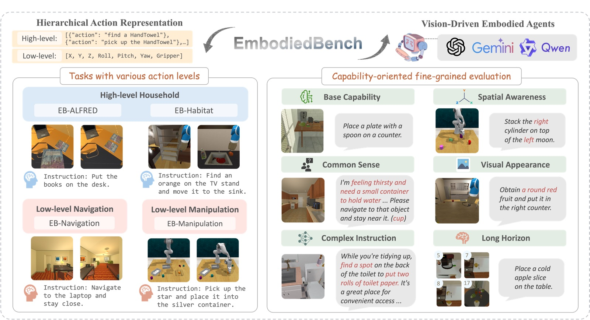

EM
EmbodiedBench
评测多模态大模型当具身智能体的基准，含家务规划、导航、操作四个环境共 1,128 个测试实例。
壹碑面
EmbodiedBench
官方榜单 ↗
类型 仿真指标 任务成功率（%）行数 105刷新 人工核验官方数据日 2026-05-31本站拉取 2026-11-14
据官方页，24 个多模态大模型由基准方统一评测，按四个环境分表（高层 ALFRED、Habitat；低层 Navigation、Manipulation），分数为子集平均成功率；另录 CVPR 2026 挑战赛两表。
| # | 模型 | 任务成功率（%） | 协议 | 分榜 | 日期 | 状态 |
|---|---|---|---|---|---|---|
| 1 | Claude-3.7-Sonnet Anthropic |
67.7% |
基准方统一评测；子集 base/common/complex/visual/spatial/long = 68 / 68 / 70 / 68 / 62 / 70 |
高层·EB-ALFRED | 06·05 | 官方榜 |
| 2 | Claude-3.5-Sonnet Anthropic |
64.0% |
基准方统一评测；子集 base/common/complex/visual/spatial/long = 72 / 66 / 76 / 60 / 58 / 52 |
高层·EB-ALFRED | 02·13 | 官方榜 |
| 3 | Gemini-1.5-Pro Google |
62.3% |
基准方统一评测；子集 base/common/complex/visual/spatial/long = 70 / 64 / 72 / 58 / 52 / 58 |
高层·EB-ALFRED | 02·13 | 官方榜 |
| 4 | GPT-4o OpenAI |
56.3% |
基准方统一评测；子集 base/common/complex/visual/spatial/long = 64 / 54 / 68 / 46 / 52 / 54 |
高层·EB-ALFRED | 02·13 | 官方榜 |
| 5 | Gemini-2.0-flash Google |
52.3% |
基准方统一评测；子集 base/common/complex/visual/spatial/long = 62 / 48 / 54 / 46 / 46 / 58 |
高层·EB-ALFRED | 02·13 | 官方榜 |
| 6 | Qwen-VL-Max 阿里巴巴 Qwen |
41.3% |
基准方统一评测；子集 base/common/complex/visual/spatial/long = 44 / 48 / 44 / 42 / 38 / 32 |
高层·EB-ALFRED | 02·23 | 官方榜 |
| 7 | Qwen2.5-VL-72B-Ins 阿里巴巴 Qwen |
39.7% |
基准方统一评测；子集 base/common/complex/visual/spatial/long = 50 / 42 / 42 / 36 / 34 / 34 |
高层·EB-ALFRED | 02·23 | 官方榜 |
| 8 | Gemini-1.5-flash Google |
39.3% |
基准方统一评测；子集 base/common/complex/visual/spatial/long = 44 / 40 / 56 / 42 / 26 / 28 |
高层·EB-ALFRED | 02·13 | 官方榜 |
| 9 | InternVL3-78B 上海 AI Lab（OpenGVLab） |
39.0% |
基准方统一评测；子集 base/common/complex/visual/spatial/long = 38 / 34 / 46 / 42 / 38 / 36 |
高层·EB-ALFRED | 06·05 | 官方榜 |
| 10 | InternVL3-38B 上海 AI Lab（OpenGVLab） |
38.0% |
基准方统一评测；子集 base/common/complex/visual/spatial/long = 42 / 34 / 48 / 30 / 30 / 44 |
高层·EB-ALFRED | 06·05 | 官方榜 |
| 11 | InternVL2_5-78B 上海 AI Lab（OpenGVLab） |
37.7% |
基准方统一评测；子集 base/common/complex/visual/spatial/long = 38 / 34 / 42 / 34 / 36 / 42 |
高层·EB-ALFRED | 02·13 | 官方榜 |
| 12 | gemma-3-27b-it Google |
37.0% |
基准方统一评测；子集 base/common/complex/visual/spatial/long = 42 / 40 / 48 / 30 / 36 / 26 |
高层·EB-ALFRED | 06·05 | 官方榜 |
| 13 | Qwen2-VL-72B-Ins 阿里巴巴 Qwen |
33.7% |
基准方统一评测；子集 base/common/complex/visual/spatial/long = 40 / 30 / 40 / 30 / 32 / 30 |
高层·EB-ALFRED | 02·13 | 官方榜 |
| 14 | Llama-3.2-90B-Vision-Ins Meta |
32.0% |
基准方统一评测；子集 base/common/complex/visual/spatial/long = 38 / 34 / 44 / 28 / 32 / 16 |
高层·EB-ALFRED | 02·13 | 官方榜 |
| 15 | Ovis2-34B 阿里国际 AIDC-AI |
28.7% |
基准方统一评测；子集 base/common/complex/visual/spatial/long = 34 / 30 / 38 / 28 / 18 / 24 |
高层·EB-ALFRED | 06·05 | 官方榜 |
| 16 | gemma-3-12b-it Google |
25.7% |
基准方统一评测；子集 base/common/complex/visual/spatial/long = 32 / 26 / 38 / 26 / 20 / 12 |
高层·EB-ALFRED | 06·05 | 官方榜 |
| 17 | GPT-4o mini OpenAI |
24.0% |
基准方统一评测；子集 base/common/complex/visual/spatial/long = 34 / 28 / 36 / 24 / 22 / 0 |
高层·EB-ALFRED | 02·13 | 官方榜 |
| 18 | InternVL2_5-38B 上海 AI Lab（OpenGVLab） |
23.3% |
基准方统一评测；子集 base/common/complex/visual/spatial/long = 36 / 30 / 36 / 22 / 14 / 26 |
高层·EB-ALFRED | 02·13 | 官方榜 |
| 19 | Ovis2-16B 阿里国际 AIDC-AI |
16.3% |
基准方统一评测；子集 base/common/complex/visual/spatial/long = 26 / 16 / 24 / 12 / 16 / 4 |
高层·EB-ALFRED | 06·05 | 官方榜 |
| 20 | Llama-3.2-11B-Vision-Ins Meta |
13.7% |
基准方统一评测；子集 base/common/complex/visual/spatial/long = 24 / 8 / 16 / 22 / 6 / 6 |
高层·EB-ALFRED | 02·13 | 官方榜 |
| 21 | InternVL3-8B 上海 AI Lab（OpenGVLab） |
10.3% |
基准方统一评测；子集 base/common/complex/visual/spatial/long = 20 / 14 / 14 / 12 / 0 / 2 |
高层·EB-ALFRED | 06·05 | 官方榜 |
| 22 | Qwen2.5-VL-7B-Ins 阿里巴巴 Qwen |
4.7% |
基准方统一评测；子集 base/common/complex/visual/spatial/long = 10 / 8 / 6 / 2 / 0 / 2 |
高层·EB-ALFRED | 02·23 | 官方榜 |
| 23 | InternVL2_5-8B 上海 AI Lab（OpenGVLab） |
2.0% |
基准方统一评测；子集 base/common/complex/visual/spatial/long = 4 / 6 / 2 / 0 / 0 / 0 |
高层·EB-ALFRED | 02·13 | 官方榜 |
| 24 | Qwen2-VL-7B-Ins 阿里巴巴 Qwen |
1.7% |
基准方统一评测；子集 base/common/complex/visual/spatial/long = 6 / 0 / 2 / 0 / 0 / 2 |
高层·EB-ALFRED | 02·13 | 官方榜 |
| 1 | Claude-3.5-Sonnet Anthropic |
68.0% |
基准方统一评测；子集 base/common/complex/visual/spatial/long = 96 / 68 / 78 / 70 / 38 / 58 |
高层·EB-Habitat | 02·13 | 官方榜 |
| 2 | GPT-4o OpenAI |
59.0% |
基准方统一评测；子集 base/common/complex/visual/spatial/long = 86 / 44 / 56 / 68 / 36 / 64 |
高层·EB-Habitat | 02·13 | 官方榜 |
| 3 | Claude-3.7-Sonnet Anthropic |
58.7% |
基准方统一评测；子集 base/common/complex/visual/spatial/long = 90 / 58 / 58 / 62 / 38 / 46 |
高层·EB-Habitat | 06·05 | 官方榜 |
| 4 | Gemini-1.5-Pro Google |
56.3% |
基准方统一评测；子集 base/common/complex/visual/spatial/long = 92 / 52 / 48 / 56 / 38 / 52 |
高层·EB-Habitat | 02·13 | 官方榜 |
| 5 | InternVL3-78B 上海 AI Lab（OpenGVLab） |
55.0% |
基准方统一评测；子集 base/common/complex/visual/spatial/long = 84 / 58 / 60 / 56 / 32 / 40 |
高层·EB-Habitat | 06·05 | 官方榜 |
| 6 | InternVL2_5-78B 上海 AI Lab（OpenGVLab） |
49.0% |
基准方统一评测；子集 base/common/complex/visual/spatial/long = 80 / 42 / 56 / 58 / 30 / 28 |
高层·EB-Habitat | 02·13 | 官方榜 |
| 7 | Qwen-VL-Max 阿里巴巴 Qwen |
45.3% |
基准方统一评测；子集 base/common/complex/visual/spatial/long = 74 / 40 / 50 / 42 / 30 / 36 |
高层·EB-Habitat | 02·23 | 官方榜 |
| 8 | InternVL3-38B 上海 AI Lab（OpenGVLab） |
43.3% |
基准方统一评测；子集 base/common/complex/visual/spatial/long = 80 / 26 / 52 / 40 / 30 / 32 |
高层·EB-Habitat | 06·05 | 官方榜 |
| 9 | Gemini-2.0-flash Google |
42.3% |
基准方统一评测；子集 base/common/complex/visual/spatial/long = 82 / 38 / 38 / 36 / 34 / 26 |
高层·EB-Habitat | 02·13 | 官方榜 |
| 10 | Llama-3.2-90B-Vision-Ins Meta |
40.3% |
基准方统一评测；子集 base/common/complex/visual/spatial/long = 94 / 24 / 50 / 32 / 28 / 14 |
高层·EB-Habitat | 02·13 | 官方榜 |
| 11 | Gemini-1.5-flash Google |
39.3% |
基准方统一评测；子集 base/common/complex/visual/spatial/long = 76 / 32 / 48 / 36 / 32 / 12 |
高层·EB-Habitat | 02·13 | 官方榜 |
| 12 | InternVL2_5-38B 上海 AI Lab（OpenGVLab） |
38.3% |
基准方统一评测；子集 base/common/complex/visual/spatial/long = 60 / 28 / 48 / 34 / 32 / 28 |
高层·EB-Habitat | 02·13 | 官方榜 |
| 13 | Qwen2.5-VL-72B-Ins 阿里巴巴 Qwen |
37.7% |
基准方统一评测；子集 base/common/complex/visual/spatial/long = 74 / 28 / 42 / 40 / 24 / 18 |
高层·EB-Habitat | 02·23 | 官方榜 |
| 14 | Ovis2-34B 阿里国际 AIDC-AI |
37.0% |
基准方统一评测；子集 base/common/complex/visual/spatial/long = 68 / 34 / 38 / 38 / 30 / 14 |
高层·EB-Habitat | 06·05 | 官方榜 |
| 15 | Qwen2-VL-72B-Ins 阿里巴巴 Qwen |
35.7% |
基准方统一评测；子集 base/common/complex/visual/spatial/long = 70 / 30 / 36 / 32 / 28 / 18 |
高层·EB-Habitat | 02·13 | 官方榜 |
| 16 | gemma-3-27b-it Google |
35.7% |
基准方统一评测；子集 base/common/complex/visual/spatial/long = 68 / 26 / 30 / 40 / 28 / 22 |
高层·EB-Habitat | 06·05 | 官方榜 |
| 17 | GPT-4o mini OpenAI |
32.7% |
基准方统一评测；子集 base/common/complex/visual/spatial/long = 74 / 22 / 32 / 22 / 32 / 14 |
高层·EB-Habitat | 02·13 | 官方榜 |
| 18 | Ovis2-16B 阿里国际 AIDC-AI |
32.0% |
基准方统一评测；子集 base/common/complex/visual/spatial/long = 66 / 26 / 42 / 28 / 22 / 8 |
高层·EB-Habitat | 06·05 | 官方榜 |
| 19 | Llama-3.2-11B-Vision-Ins Meta |
25.0% |
基准方统一评测；子集 base/common/complex/visual/spatial/long = 70 / 16 / 28 / 10 / 20 / 6 |
高层·EB-Habitat | 02·13 | 官方榜 |
| 20 | InternVL3-8B 上海 AI Lab（OpenGVLab） |
24.3% |
基准方统一评测；子集 base/common/complex/visual/spatial/long = 60 / 14 / 24 / 18 / 20 / 10 |
高层·EB-Habitat | 06·05 | 官方榜 |
| 21 | gemma-3-12b-it Google |
23.0% |
基准方统一评测；子集 base/common/complex/visual/spatial/long = 58 / 10 / 24 / 18 / 24 / 4 |
高层·EB-Habitat | 06·05 | 官方榜 |
| 22 | Qwen2-VL-7B-Ins 阿里巴巴 Qwen |
18.3% |
基准方统一评测；子集 base/common/complex/visual/spatial/long = 48 / 6 / 16 / 20 / 18 / 2 |
高层·EB-Habitat | 02·13 | 官方榜 |
| 23 | Qwen2.5-VL-7B-Ins 阿里巴巴 Qwen |
14.3% |
基准方统一评测；子集 base/common/complex/visual/spatial/long = 32 / 2 / 26 / 10 / 14 / 2 |
高层·EB-Habitat | 02·23 | 官方榜 |
| 24 | InternVL2_5-8B 上海 AI Lab（OpenGVLab） |
11.3% |
基准方统一评测；子集 base/common/complex/visual/spatial/long = 36 / 4 / 0 / 10 / 16 / 2 |
高层·EB-Habitat | 02·13 | 官方榜 |
| 1 | GPT-4o OpenAI |
57.7% |
基准方统一评测；子集 base/common/complex/visual/long = 55.0 / 60.0 / 58.3 / 60.0 / 55.0 |
低层·EB-Navigation | 02·13 | 官方榜 |
| 2 | InternVL3-78B 上海 AI Lab（OpenGVLab） |
53.7% |
基准方统一评测；子集 base/common/complex/visual/long = 66.7 / 63.3 / 61.7 / 45.0 / 31.7 |
低层·EB-Navigation | 06·05 | 官方榜 |
| 3 | InternVL3-38B 上海 AI Lab（OpenGVLab） |
50.7% |
基准方统一评测；子集 base/common/complex/visual/long = 55.0 / 61.7 / 55.0 / 56.7 / 25.0 |
低层·EB-Navigation | 06·05 | 官方榜 |
| 4 | Gemini-2.0-flash Google |
48.7% |
基准方统一评测；子集 base/common/complex/visual/long = 63.3 / 65.0 / 50.0 / 51.7 / 13.3 |
低层·EB-Navigation | 02·13 | 官方榜 |
| 5 | Ovis2-16B 阿里国际 AIDC-AI |
47.7% |
基准方统一评测；子集 base/common/complex/visual/long = 60.0 / 46.7 / 58.3 / 48.3 / 25.0 |
低层·EB-Navigation | 06·05 | 官方榜 |
| 6 | Ovis2-34B 阿里国际 AIDC-AI |
45.7% |
基准方统一评测；子集 base/common/complex/visual/long = 63.3 / 50.0 / 56.7 / 46.7 / 11.7 |
低层·EB-Navigation | 06·05 | 官方榜 |
| 7 | gemma-3-27b-it Google |
45.4% |
基准方统一评测；子集 base/common/complex/visual/long = 53.3 / 45.0 / 61.7 / 50.0 / 16.7 |
低层·EB-Navigation | 06·05 | 官方榜 |
| 8 | Claude-3.7-Sonnet Anthropic |
45.0% |
基准方统一评测；子集 base/common/complex/visual/long = 50.0 / 61.7 / 50.0 / 36.7 / 26.7 |
低层·EB-Navigation | 06·05 | 官方榜 |
| 9 | Claude-3.5-Sonnet Anthropic |
44.7% |
基准方统一评测；子集 base/common/complex/visual/long = 66.7 / 51.7 / 41.7 / 36.7 / 26.7 |
低层·EB-Navigation | 02·13 | 官方榜 |
| 10 | Gemini-1.5-flash Google |
41.7% |
基准方统一评测；子集 base/common/complex/visual/long = 56.7 / 50.0 / 46.7 / 50.0 / 5.0 |
低层·EB-Navigation | 02·13 | 官方榜 |
| 11 | Qwen2.5-VL-72B-Ins 阿里巴巴 Qwen |
40.0% |
基准方统一评测；子集 base/common/complex/visual/long = 46.7 / 46.7 / 46.7 / 26.7 / 33.3 |
低层·EB-Navigation | 02·23 | 官方榜 |
| 12 | Qwen-VL-Max 阿里巴巴 Qwen |
39.7% |
基准方统一评测；子集 base/common/complex/visual/long = 50.0 / 46.7 / 41.7 / 35.0 / 25.0 |
低层·EB-Navigation | 02·23 | 官方榜 |
| 13 | gemma-3-12b-it Google |
34.0% |
基准方统一评测；子集 base/common/complex/visual/long = 38.3 / 36.7 / 48.3 / 40.0 / 6.7 |
低层·EB-Navigation | 06·05 | 官方榜 |
| 14 | GPT-4o-mini OpenAI |
32.8% |
基准方统一评测；子集 base/common/complex/visual/long = 31.7 / 33.3 / 35.0 / 28.3 / 33.3 |
低层·EB-Navigation | 02·13 | 官方榜 |
| 15 | InternVL2_5-78B 上海 AI Lab（OpenGVLab） |
30.7% |
基准方统一评测；子集 base/common/complex/visual/long = 36.7 / 38.3 / 33.3 / 21.7 / 23.3 |
低层·EB-Navigation | 02·13 | 官方榜 |
| 16 | InternVL2_5-38B 上海 AI Lab（OpenGVLab） |
30.3% |
基准方统一评测；子集 base/common/complex/visual/long = 35.0 / 28.3 / 38.3 / 26.7 / 23.3 |
低层·EB-Navigation | 02·13 | 官方榜 |
| 17 | Llama-3.2-90B-Vision-Ins Meta |
30.0% |
基准方统一评测；子集 base/common/complex/visual/long = 48.3 / 23.3 / 38.3 / 33.3 / 6.7 |
低层·EB-Navigation | 02·13 | 官方榜 |
| 18 | InternVL3-8B 上海 AI Lab（OpenGVLab） |
29.3% |
基准方统一评测；子集 base/common/complex/visual/long = 38.3 / 30.0 / 40.0 / 33.3 / 5.0 |
低层·EB-Navigation | 06·05 | 官方榜 |
| 19 | Gemini-1.5-Pro Google |
24.3% |
基准方统一评测；子集 base/common/complex/visual/long = 23.3 / 25.0 / 25.0 / 28.3 / 20.0 |
低层·EB-Navigation | 02·13 | 官方榜 |
| 20 | Llama-3.2-11B-Vision-Ins Meta |
21.4% |
基准方统一评测；子集 base/common/complex/visual/long = 23.3 / 21.7 / 26.7 / 18.3 / 17.0 |
低层·EB-Navigation | 02·13 | 官方榜 |
| 21 | InternVL2_5-8B 上海 AI Lab（OpenGVLab） |
21.3% |
基准方统一评测；子集 base/common/complex/visual/long = 35.0 / 23.3 / 21.7 / 26.7 / 0.0 |
低层·EB-Navigation | 02·13 | 官方榜 |
| 22 | Qwen2-VL-72B-Ins 阿里巴巴 Qwen |
21.2% |
基准方统一评测；子集 base/common/complex/visual/long = 26.7 / 30.0 / 28.3 / 16.0 / 5.0 |
低层·EB-Navigation | 02·13 | 官方榜 |
| 23 | Qwen2.5-VL-7B-Ins 阿里巴巴 Qwen |
20.3% |
基准方统一评测；子集 base/common/complex/visual/long = 20.0 / 26.7 / 38.3 / 16.7 / 0.0 |
低层·EB-Navigation | 02·23 | 官方榜 |
| 24 | Qwen2-VL-7B-Ins 阿里巴巴 Qwen |
14.0% |
基准方统一评测；子集 base/common/complex/visual/long = 26.7 / 10.0 / 15.0 / 15.0 / 3.3 |
低层·EB-Navigation | 02·13 | 官方榜 |
| 1 | GPT-4o OpenAI |
28.9% |
基准方统一评测；子集 base/common/complex/visual/spatial = 39.6 / 29.2 / 29.2 / 19.4 / 25.0 |
低层·EB-Manipulation | 02·13 | 官方榜 |
| 2 | Claude-3.7-Sonnet Anthropic |
28.5% |
基准方统一评测；子集 base/common/complex/visual/spatial = 31.3 / 20.8 / 43.8 / 25.0 / 20.8 |
低层·EB-Manipulation | 06·05 | 官方榜 |
| 3 | Ovis2-34B 阿里国际 AIDC-AI |
26.8% |
基准方统一评测；子集 base/common/complex/visual/spatial = 31.3 / 25.0 / 18.8 / 27.8 / 31.3 |
低层·EB-Manipulation | 06·05 | 官方榜 |
| 4 | InternVL3-78B 上海 AI Lab（OpenGVLab） |
26.3% |
基准方统一评测；子集 base/common/complex/visual/spatial = 29.2 / 22.9 / 22.9 / 25.0 / 31.3 |
低层·EB-Manipulation | 06·05 | 官方榜 |
| 5 | Claude-3.5-Sonnet Anthropic |
25.4% |
基准方统一评测；子集 base/common/complex/visual/spatial = 37.5 / 16.7 / 29.2 / 19.4 / 22.9 |
低层·EB-Manipulation | 02·13 | 官方榜 |
| 6 | InternVL3-38B 上海 AI Lab（OpenGVLab） |
22.6% |
基准方统一评测；子集 base/common/complex/visual/spatial = 20.8 / 14.6 / 20.8 / 19.4 / 37.5 |
低层·EB-Manipulation | 06·05 | 官方榜 |
| 7 | Gemini-1.5-Pro Google |
21.1% |
基准方统一评测；子集 base/common/complex/visual/spatial = 14.6 / 14.6 / 22.9 / 16.7 / 35.4 |
低层·EB-Manipulation | 02·13 | 官方榜 |
| 8 | gemma-3-12b-it Google |
20.6% |
基准方统一评测；子集 base/common/complex/visual/spatial = 20.8 / 22.9 / 20.8 / 19.4 / 18.8 |
低层·EB-Manipulation | 06·05 | 官方榜 |
| 9 | Qwen-VL-Max 阿里巴巴 Qwen |
18.0% |
基准方统一评测；子集 base/common/complex/visual/spatial = 25.0 / 10.4 / 18.8 / 2.8 / 29.2 |
低层·EB-Manipulation | 02·23 | 官方榜 |
| 10 | InternVL2_5-78B 上海 AI Lab（OpenGVLab） |
18.0% |
基准方统一评测；子集 base/common/complex/visual/spatial = 16.7 / 16.7 / 14.6 / 22.2 / 20.8 |
低层·EB-Manipulation | 02·13 | 官方榜 |
| 11 | gemma-3-27b-it Google |
17.5% |
基准方统一评测；子集 base/common/complex/visual/spatial = 25.0 / 16.7 / 16.7 / 8.3 / 20.8 |
低层·EB-Manipulation | 06·05 | 官方榜 |
| 12 | Gemini-2.0-flash Google |
16.7% |
基准方统一评测；子集 base/common/complex/visual/spatial = 14.6 / 8.3 / 14.6 / 13.9 / 31.3 |
低层·EB-Manipulation | 02·13 | 官方榜 |
| 13 | Qwen2.5-VL-72B-Ins 阿里巴巴 Qwen |
16.2% |
基准方统一评测；子集 base/common/complex/visual/spatial = 12.5 / 12.5 / 16.7 / 22.2 / 18.8 |
低层·EB-Manipulation | 02·23 | 官方榜 |
| 14 | InternVL2_5-38B 上海 AI Lab（OpenGVLab） |
15.8% |
基准方统一评测；子集 base/common/complex/visual/spatial = 22.9 / 16.7 / 8.3 / 13.9 / 16.7 |
低层·EB-Manipulation | 02·13 | 官方榜 |
| 15 | Llama-3.2-90B-Vision-Ins Meta |
14.9% |
基准方统一评测；子集 base/common/complex/visual/spatial = 10.4 / 12.5 / 16.7 / 10.4 / 20.8 |
低层·EB-Manipulation | 02·13 | 官方榜 |
| 16 | Qwen2-VL-72B-Ins 阿里巴巴 Qwen |
13.6% |
基准方统一评测；子集 base/common/complex/visual/spatial = 18.8 / 20.8 / 4.2 / 8.3 / 14.6 |
低层·EB-Manipulation | 02·13 | 官方榜 |
| 17 | InternVL3-8B 上海 AI Lab（OpenGVLab） |
11.5% |
基准方统一评测；子集 base/common/complex/visual/spatial = 10.4 / 10.4 / 12.5 / 13.9 / 10.4 |
低层·EB-Manipulation | 06·05 | 官方榜 |
| 18 | Ovis2-16B 阿里国际 AIDC-AI |
11.3% |
基准方统一评测；子集 base/common/complex/visual/spatial = 10.4 / 4.2 / 16.7 / 16.7 / 8.3 |
低层·EB-Manipulation | 06·05 | 官方榜 |
| 19 | Gemini-1.5-flash Google |
9.6% |
基准方统一评测；子集 base/common/complex/visual/spatial = 14.6 / 10.4 / 4.2 / 8.3 / 10.4 |
低层·EB-Manipulation | 02·13 | 官方榜 |
| 20 | Qwen2.5-VL-7B-Ins 阿里巴巴 Qwen |
9.6% |
基准方统一评测；子集 base/common/complex/visual/spatial = 8.3 / 8.3 / 8.3 / 5.6 / 16.7 |
低层·EB-Manipulation | 02·23 | 官方榜 |
| 21 | InternVL2_5-8B 上海 AI Lab（OpenGVLab） |
7.0% |
基准方统一评测；子集 base/common/complex/visual/spatial = 8.3 / 2.1 / 6.3 / 8.3 / 10.4 |
低层·EB-Manipulation | 02·13 | 官方榜 |
| 22 | GPT-4o-mini OpenAI |
4.8% |
基准方统一评测；子集 base/common/complex/visual/spatial = 4.2 / 6.3 / 2.1 / 0.0 / 10.4 |
低层·EB-Manipulation | 02·13 | 官方榜 |
| 23 | Llama-3.2-11B-Vision-Ins Meta |
0.9% |
基准方统一评测；子集 base/common/complex/visual/spatial = 0.0 / 0.0 / 2.1 / 0.0 / 2.1 |
低层·EB-Manipulation | 02·13 | 官方榜 |
| 24 | Qwen2-VL-7B-Ins 阿里巴巴 Qwen |
0.1% |
基准方统一评测；子集 base/common/complex/visual/spatial = 0.0 / 0.0 / 0.0 / 0.0 / 0.0；官方 JSON 均值记 0.1，论文 v3 表记 0.0 |
低层·EB-Manipulation | 02·13 | 官方榜 |
| 1 | NJU-LAMDA-SZ |
82.50% |
第一阶段公开集，队伍经 EvalAI 提交轨迹；EB-ALFRED 83.33 / EB-Navigation 81.67，取两者平均 |
CVPR 2026 挑战赛·公开集 | 05·25 | 官方榜 |
| 2 | Ideal-Embody(Ideal) |
61.33% |
第一阶段公开集，队伍经 EvalAI 提交轨迹；EB-ALFRED 66.33 / EB-Navigation 56.33，取两者平均 |
CVPR 2026 挑战赛·公开集 | 05·25 | 官方榜 |
| 3 | vla-number-one |
55.05% |
第一阶段公开集，队伍经 EvalAI 提交轨迹；EB-ALFRED 65.77 / EB-Navigation 44.33，取两者平均；该队后退出赛事 |
CVPR 2026 挑战赛·公开集 | 05·25 | 官方榜 |
| 4 | team233 |
42.67% |
第一阶段公开集，队伍经 EvalAI 提交轨迹；EB-ALFRED 42.33 / EB-Navigation 43.00，取两者平均 |
CVPR 2026 挑战赛·公开集 | 05·25 | 官方榜 |
| 5 | EBSkills |
37.50% |
第一阶段公开集，队伍经 EvalAI 提交轨迹；EB-ALFRED 24.67 / EB-Navigation 50.33，取两者平均 |
CVPR 2026 挑战赛·公开集 | 05·25 | 官方榜 |
| 1 | NJU-LAMDA-SZ |
52.2% |
第二阶段留出集，主办方在线复跑；EB-ALFRED 67.3 / EB-Navigation 37.0，取两者平均；导航步数上限放宽到 30 |
CVPR 2026 挑战赛·留出集 | 05·31 | 官方榜 |
| 2 | Ideal-Embody(Ideal) |
48.7% |
第二阶段留出集，主办方在线复跑；EB-ALFRED 75.3 / EB-Navigation 22.0，取两者平均；导航步数上限放宽到 30 |
CVPR 2026 挑战赛·留出集 | 05·31 | 官方榜 |
| 3 | Team233 |
36.4% |
第二阶段留出集，主办方在线复跑；EB-ALFRED 44.7 / EB-Navigation 28.0，取两者平均；导航步数上限放宽到 30 |
CVPR 2026 挑战赛·留出集 | 05·31 | 官方榜 |
| 4 | EBSkills |
24.9% |
第二阶段留出集，主办方在线复跑；EB-ALFRED 22.7 / EB-Navigation 27.0，取两者平均；导航步数上限放宽到 30 |
CVPR 2026 挑战赛·留出集 | 05·31 | 官方榜 |
贰同类之碑